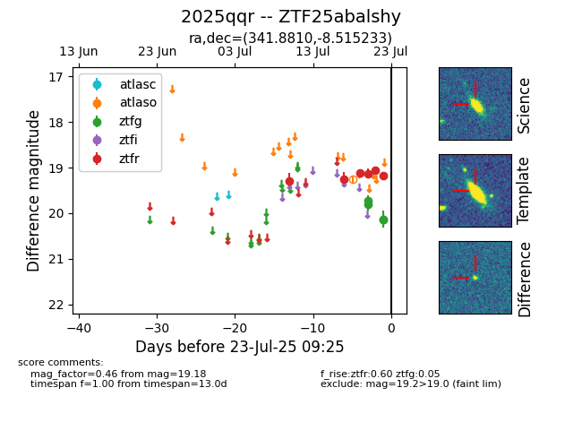

Target ZTF25abalshy at 2025-07-23 11:48, see:
FINK: fink-portal.org/ZTF25abalshy
Lasair: lasair-ztf.lsst.ac.uk/objects/ZTF25abalshy
ALeRCE: alerce.online/object/ZTF25abalshy
TNS: wis-tns.org/object/2025qqr
YSE: ziggy.ucolick.org/yse/transient_detail/2025qqr
alt names
ZTF25abalshy (ztf,fink)
2025qqr (tns,yse)
coordinates:
equatorial (ra, dec) = (341.8810,-8.51523)
galactic (l, b) = (59.5266,-55.30039)
photometry
last ztfg=20.15, ztfr=19.18
4 ztfg, 6 ztfr detections
